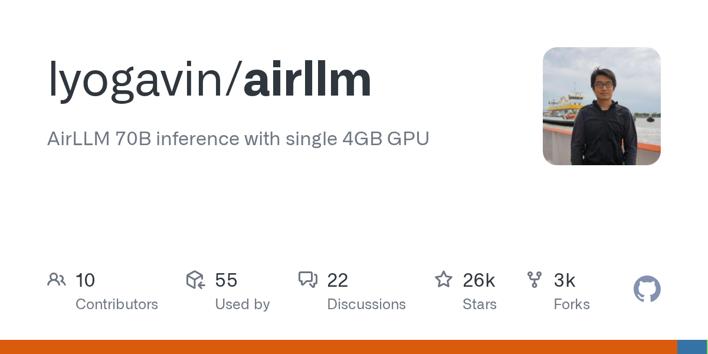

Hodl Threads｜AirLLM：4GB 顯卡跑 70B 的低 VRAM 推理技巧，和「能流暢用」是兩件事

為什麼保存
這則 Threads 用非常誇張的語氣說「Llama 70B → 4GB 顯卡隨便跑」「Kimi K3 2.8 兆參數吃不到 4GB」，很容易被解讀成「不用買 GPU 了」。但背後的 AirLLM 其實有值得保存的技術重點：它展示了透過分層載入、按需搬運與 MoE expert streaming，把 VRAM 需求壓到很低的推理方式。
關鍵判讀是：**能跑，不等於快；能推理，不等於適合即時聊天或正式服務。**
Threads 可見重點
Threads canonical：`https://www.threads.com/@life_is_now_web3/post/DbkxPLOirde`。
貼文主張：
- AirLLM 可以讓 Llama 70B 在 4GB 顯卡上跑。
- Llama 405B 可在 8GB、DeepSeek-V3 671B 可在約 12GB、Kimi K3 2.8T 可低於 4GB VRAM。
- 方法不是量化、蒸餾或剪枝，而是顯卡塞不下時「一次只搬一層模型」到 GPU，算完再換下一層。
- 對 MoE 模型則只搬「當下 token 用到的 expert」，不用把全部 expert 放進 VRAM。
- 貼文留言有人直接提醒：速度可能只有約 3 token/s，「根本不能用」於一般體感的即時互動。
這裡的「隨便跑」「別花冤枉錢買顯卡」屬於社群導流 framing；本文只保存其技術觀察，不把它視為效能或採購建議。
官方/GitHub 查核
GitHub repo：`lyogavin/airllm`。
查核時間點：2026-08-03，GitHub API 顯示：
| 項目 | 結果 |
|---|---|
| Repo | `lyogavin/airllm` |
| 描述 | AirLLM 70B inference with single 4GB GPU |
| Stars | 約 26,366，會隨時間變動 |
| Forks | 約 2,927，會隨時間變動 |
| License | Apache-2.0 |
| PyPI | `airllm` 最新版本查得為 3.1.0 |
AirLLM README 與 PyPI summary 都寫明：
- 70B large language models 可在 single 4GB GPU 上運行。
- Llama 3.1 405B 可在 8GB。
- DeepSeek-V3 671B 約 12GB。
- Kimi K3 2.8T 可低於 4GB，README 說明是因 sparse MoE 只 stream 當下 token 實際 route 到的 experts。
README 也明確提醒：推理前會先把原始模型拆成 layer-wise shards 並存起來，因此 Hugging Face cache / 磁碟空間要足夠；FAQ 中 `MetadataIncompleteBuffer` 常見原因就是磁碟空間不足。
技術定位：用 I/O 和等待時間換 VRAM
AirLLM 的核心不是讓小顯卡突然變成 H100，而是改變「模型權重何時進 GPU」：
- 不把整個模型常駐 VRAM。
- 將模型拆成 layer-wise shards。
- 推理時一次載入需要計算的 layer，算完卸下，再載入下一層。
- 對 sparse MoE 模型，依 routing 只載入當下 token 會用到的 expert。
- 可搭配 4bit / 8bit block-wise compression 來降低載入量、改善速度。
這種做法讓 VRAM 需求取決於「單層或單個 expert 的大小」，而不是整個模型的總參數量。代價則是大量 CPU/GPU 記憶體搬移、磁碟 I/O、模型拆分時間與等待時間。
對欒帥的實用判讀
- **適合**：研究 demo、離線 batch 任務、偶爾測超大模型、教學展示「記憶體階層與推理瓶頸」。
- **不適合**：高併發服務、即時聊天產品、低延遲 agent、需要長時間穩定吞吐的工作流。
- **可做成課程案例**：用 AirLLM 對比 llama.cpp offload、vLLM、exllamav2、量化模型與雲端 API，說明「跑得動、跑得快、跑得便宜、跑得穩」是四個不同問題。
- **可作為採購提醒**：不要只看「模型能不能載入」，還要看 tokens/sec、首 token latency、磁碟空間、模型下載時間、上下文長度、batch size 與散熱/耗電。
風險與限制
- **效能落差**：低 VRAM 成功載入模型，不代表可接受的 tokens/sec。留言中的「3 token/s」雖非官方 benchmark，但很符合這類 offload/streaming 技術的體感風險。
- **磁碟與 I/O 壓力**：README 指出 layer-wise 拆分會耗磁碟空間；慢 SSD 或空間不足會直接拖垮體驗。
- **模型授權仍要另查**：AirLLM 本身是 Apache-2.0，但你跑的 Llama、DeepSeek、Kimi、Qwen 等模型各有授權條款，不能用 AirLLM 的授權覆蓋模型權重授權。
- **硬體與環境限制**：Kimi K3 支援在 README 中提到需 `compressed-tensors`、`flash-attn`、CUDA 12 build 的 torch，以及特定 transformers 版本；不是所有舊顯卡/舊系統都能無痛跑。
- **行銷語需降噪**：Threads 的「別再花冤枉錢買顯卡」不是可靠採購建議；真正要部署仍需用自己的模型、prompt、上下文長度與硬體實測。